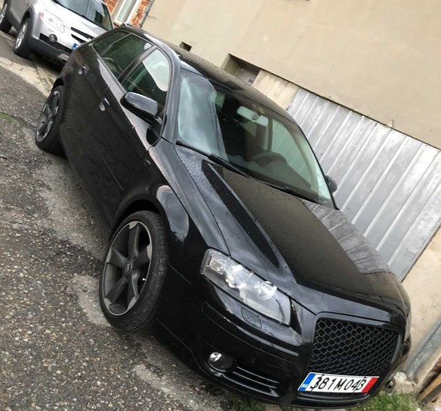
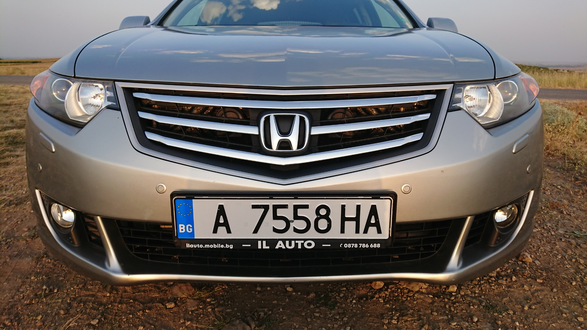

BMW
BMW Serie 3 Model E46
Още от своята поява на пазара, третата серия на BMW се превръща в еталон за динамичен спортен автомобил за ежедневна употреба. BMW 3 е един изключително ориентиран към водача автомобил и олицетворява в най-чиста степен понятието "The Ultimate Driving Machine", с което се свързва баварската марка.Това е истинският хулиган на пътя в България. Излиза от 2000 до 2006 г. Колата е измислена по-добре като двигател и ходова част спрямо Е36-ата. По-стабилна е и има по-добро разпределение не тежестта. Прави се във вариант кабрио и купе.Купето се отличава на външен вид спрямо обикновеното Е46 по калниците, които са много по-раздути, предната и задната броня, огледалата, капак.MW E46 днес е изключително търсен на пазара за употребявани автомобили в България, като ви предоставя уникален шанс да притежавате частица от баварската магия на сравнително достъпна цена.
- Бензиновите 4-цилиндровите 1.8 (316), 1,9 (318) с мощност от 105 до 143кс. и 6-цилиндровите 2.0 (320, 150кс.), 2.3 (323, 170кс.) и 2,8 (328, 193кс.).
- Дизеловите са 4-цилиндровите 1.8 (318d) и 2.0 (320d) със 115 и 136кс. През 1999г. е представен и 6-цилиндровия 3.0-литров дизел 330d с 184кс.
През 2000г. е представен и най-екстремният модел на E46 - BMW M3 с мощност от 343кс.
MERCEDES-BENZ


MERCEDES-BENZ GLE
Mercedes-Benz GLE-Klasse наричан до 2015 година „M-класа“ или „ML-класа“, е модел средни автомобили с повишена проходимост на германската компания „Мерцедес-Бенц“, произвеждан в четири поколения от 1997 година.
Въведен е като по-комфортен кросоувър вариант на класическия модел „Мерцедес-Бенц G-класа“ и става основа на разработената през следващите години цяла гама от SUV модели, които по това време придобиват широка популярност. В третото поколение моделът започва да се предлага освен с традиционната комби каросерия и в лифтбек вариант („купе“). Четвъртото поколение е с увеличени размери и използва някои технически нововъведения за пръв път в цялата гама на „Мерцедес-Бенц“.
Бензинови:3,0 V6 туин-турбо с 329 4,7 V8 с 362, 429 и 449 к.с.5,5 V8 туин-турбо с 550 и 575 к.с.Двигателите вече са с директно впръскване и поставянето на газова уредба не е изгодно.Дизелов: 3,0 литров V6 с 255 к.с.
AUDI

AUDI A3 SPORTBACK
Ауди А3 8РА Sportback се нарича версията с пет врати. В производство е от септември 2004-та. Тя е по-дълга със 72 мм от тривратия модел. А3 Sportback има по-дълга и по-стръмна задна част, но това не го прави комби. Още първият екземпляр на Sportback има новата голяма решетка на радиатора и така се превръща в първата версия на А3 с нея. Този модел разполага и с нов двигател – 2.0 TFSI с мощност от 200 к.с., който е първият серийно произведен мотор с турбо и директно впръскване.S Line е луксозното изпълнение на модела. Дори и при него се забелязва характерното за VAG групата износване на бутони и части от таблото. Много рядко се намират автомобили с запазени салони.
HONDA

HONDA ACCORD
Хонда Акорд е модел автомобил, произвеждан от Хонда от 1976 г. насам. Акорд стана първият японски автомобил започнал производството си и в САЩ през 1982 г. Този автомобил става най-продаваната кола в Щатите в продължение на 15 години или от 1982 до 1997 г. От 1997 до 2001 г. са продадени около 10 млн. автомобила. Тези модели на Хонда са минали през много изследвания и са оценени като едни от най-надеждните автомобили.Осмото поколение се сглобява от 2008 до 2012 г. в Япония и Китай, автомобилът е сходен с Acura TSX, който се предлага в Северна Америка. Предлага се във версия седан и комби – с предно предаване. През 2011 има фейслифт.
Дизайнът спрямо предходното поколение е много по-модерно, с изтънчен дизайн. Фейслифтът няма големи промени в екстериора и интериора. Автомобилът е един от най-просторните в класа си и конкурира по-горния сегмент. Очакването е стандартно, с пружини и амортисьори. Има много тунинговани версии на пазара с модифицирано окачване. Заводската версия Type S има оптичен пакет с различни брони и престилки.
Бензинови 2,0 с 156 к.с. и 2,4 с 201 и 206 к.с., надеждни са и икономични.
Дизелов 2,2 с 150 и 180 к.с.
VW
VW GOLF 4
Volkswagen Golf е модел средни автомобили на германската компания „Фолксваген“, произвеждан в седем отделни поколения от 1974 година насам.Четвъртото поколение на Golf се произвежда от 1997 до 2003 г. Предлага се като хечбек с 3 и 5 врати, комби и седан с името Bora. Няма кабриолет, но Golf 3 Cabriolet продължава да се произвежда по време на част от живота на Golf 4 със сходен външен пакет като хечбека. Произвежда се в Германия, Бразилия, Белгия, Словакия, Босна и Херцеговина, Южна Африка и Китай. Семеен автомобил, който е здрав и надежден. Задвижването е предно или 4х4 със система „Халдекс“.
1,9 TDI-надежден двигател, който позволява тунинговане.
1.4, 1.6, 1.8, 1.8T, 2.0, 2.3, 2.8, 3.2 -Бензиновите мотори позволяват монтиране на газова уредба.